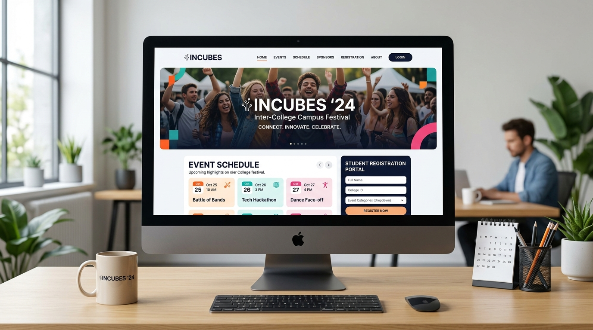

INCUBES — Inter-College Event Platform
Visit Live Site (tint.edu.in/incubes)
Audience Scale
300–500 Attendees
Delivery Timeline
100% On Schedule
Scope Integrity
Zero Scope Reduction
Techno International New Town’s flagship campus festival required a central digital entry point for event schedule broadcasts, departmental registration details, and attendee communication under an immovable launch deadline.
My Contribution & Ownership
Served as the technical project lead. Owned project planning, assigned tasks across student contributors, engineered the responsive frontend using clean semantic HTML5, CSS3, and JavaScript, and coordinated with faculty advisors to launch the site on schedule.